Kapitola 1: Značení vodičů, kabelů, přístrojů a svorek
Odborný výcvik – Jednoduché elektromontážní práce | 1. ročník
Význam vodičů a vymezení pojmů
Elektrické vodiče jsou důležitou součástí elektrických instalací. Jejich hlavním úkolem je vést elektrický proud. Používají se například ve strojích, spotřebičích, rozváděčích a elektrických rozvodech.
Vodič je část elektrického obvodu, která slouží k přenosu elektrické energie nebo elektrického signálu.
Vodivá část vodiče, kterou prochází elektrický proud. Nejčastěji je vyrobena z mědi nebo hliníku.
Nevodivá vrstva kolem jádra. Chrání člověka před úrazem elektrickým proudem a zabraňuje nežádoucímu spojení vodičů.
U izolovaného vodiče ji tvoří vodivé jádro společně s jeho izolací.
Obsahuje jednu nebo více žil, které jsou chráněny společným izolačním pláštěm.

Vodivou část vodiče nazýváme jádro. Jádro společně s izolací tvoří žílu.
Základní rozdělení vodičů
Podle toho, zda je vodivé jádro chráněno izolační vrstvou, rozdělujeme vodiče na holé vodiče a izolované vodiče.
1. Holé vodiče
Holé vodiče nemají žádnou izolační vrstvu. Ochrana před dotykem a vznikem zkratu je zajištěna především jejich vhodným umístěním nebo instalací do krytých prostor.
Využití
- venkovní nadzemní elektrická vedení,
- trolejová vedení tramvají a vlaků,
- uzemňovací soustavy,
- přípojnice v rozvodnách a rozváděčích.
Materiál
Nejčastěji se používá hliník nebo měď.
U venkovních vedení se používají také hliníková lana s ocelovým jádrem, která mají větší mechanickou pevnost.
Doplňkové barevné označení holých vodičů
Pokud je potřeba rozlišit vodiče jednotlivých fází, může se k oranžové barvě doplnit označení černými příčnými pruhy.
1. fáze se označí jedním černým pruhem, 2. fáze dvěma pruhy a 3. fáze třemi pruhy. U samostatné jednofázové soustavy se použije pouze oranžová barva bez černých pruhů.
Černé pruhy mají být úzké a příčné. V původním značení je uveden poměr šířky pruhu k výšce vodiče přibližně 1 : 4, největší šířka pruhu je 30 mm a mezera mezi pruhy má být přibližně stejná jako jejich šířka.
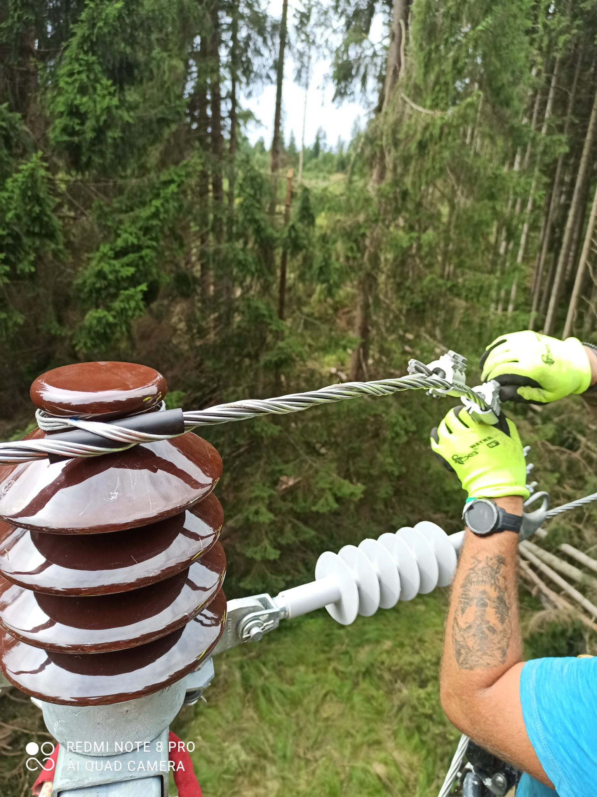
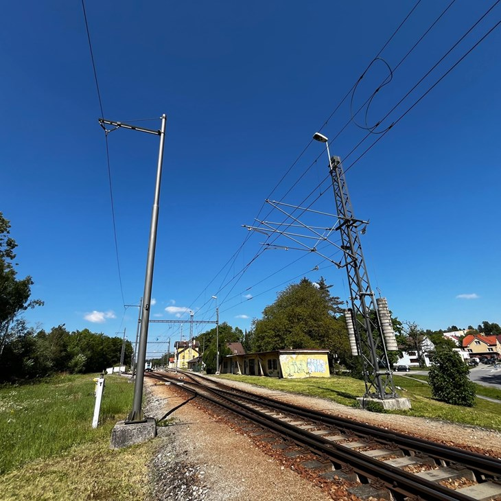
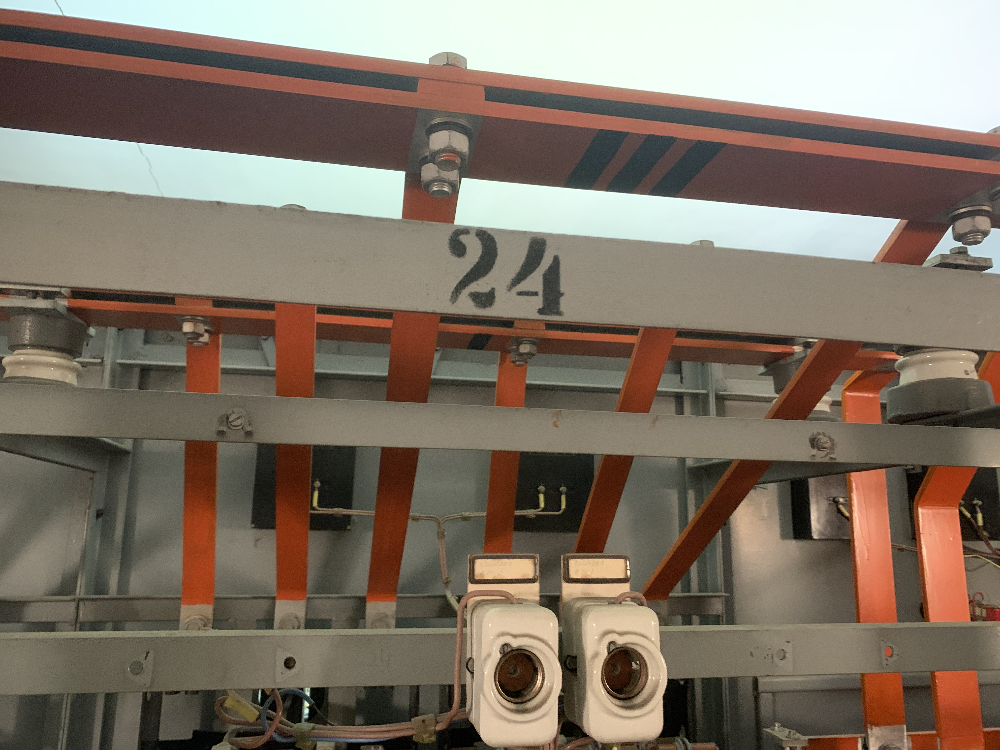
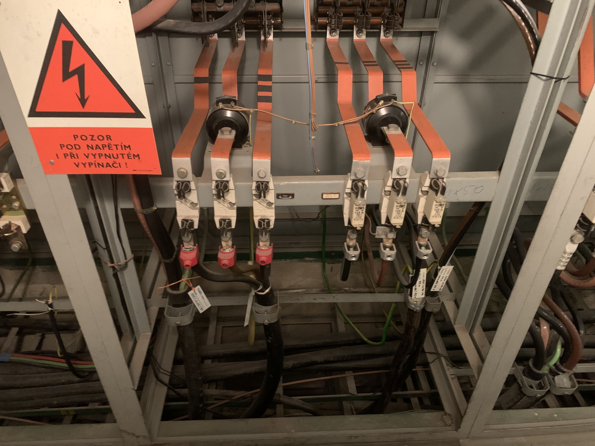
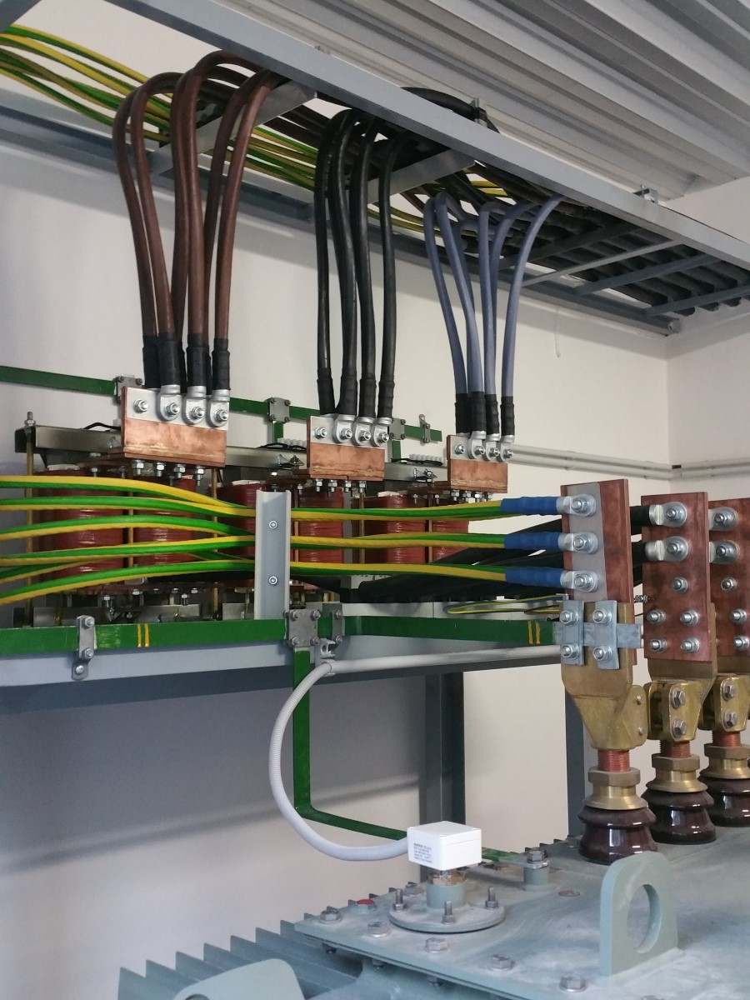
2. Izolované vodiče
Izolované vodiče mají vodivé jádro pokryté vrstvou elektroizolačního materiálu. Izolace může být například z plastu, pryže nebo laku.
Izolace zabraňuje nežádoucímu spojení vodiče s jiným vodičem nebo se zemí a zároveň pomáhá chránit člověka před úrazem elektrickým proudem.
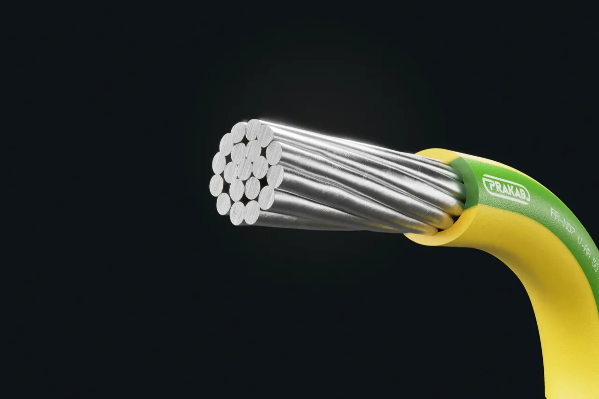
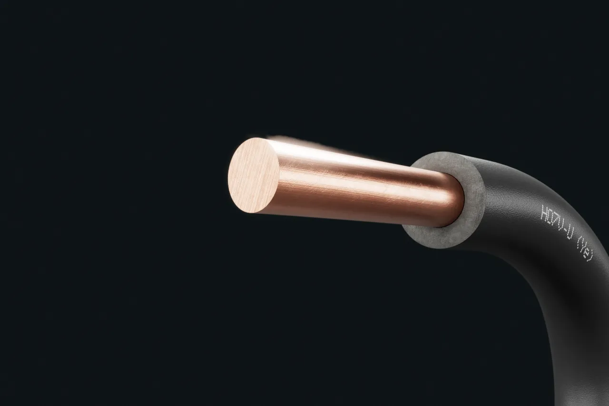
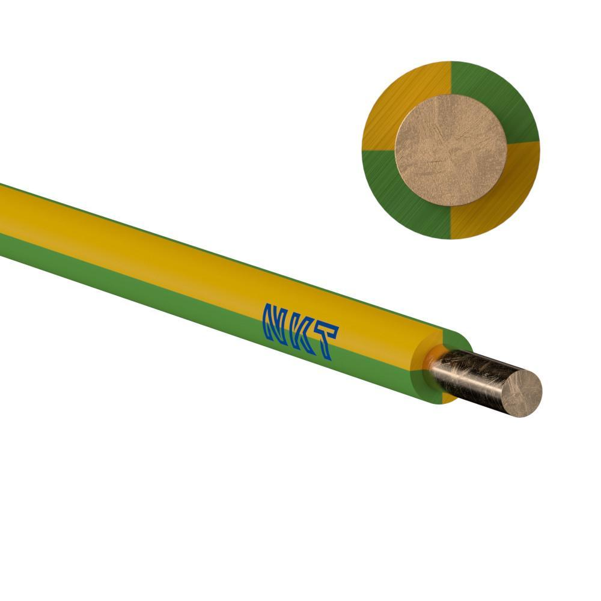
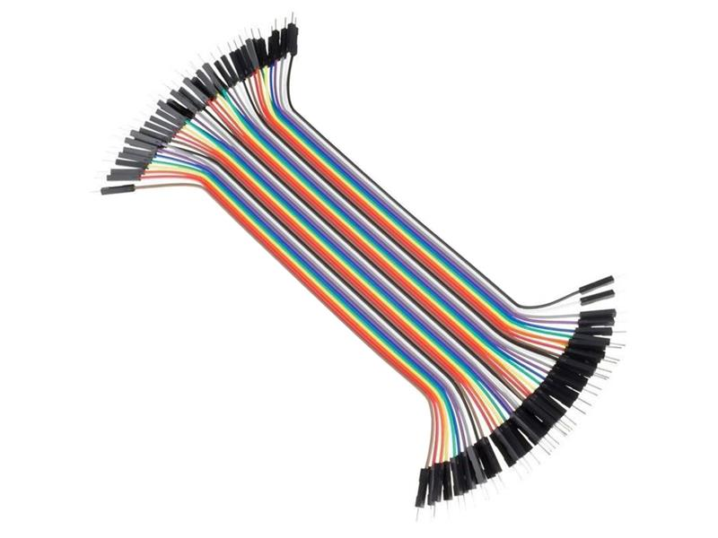
Využití
- domovní elektroinstalace,
- přívodní šňůry elektrických spotřebičů,
- vnitřní zapojení elektrických strojů,
- zapojení rozváděčů.
Úkol izolace
Izolace odděluje vodivé jádro od okolí. Zabraňuje nežádoucímu elektrickému spojení a pomáhá chránit před nebezpečným dotykem.
Konstrukční formy izolovaných vodičů
Obsahují jednu izolovanou žílu. Jádro může být tvořeno jedním drátem nebo větším počtem jemnějších drátků. Příkladem jsou vodiče CY nebo CYA.
Obsahují jednu nebo více izolovaných žil, které jsou společně chráněny dalším pláštěm. Příkladem je kabel CYKY.
Jsou ohebné vodiče nebo kabely určené hlavně pro pohyblivé přívody elektrických spotřebičů.
Jádro je tvořeno větším počtem jemných drátků. Díky tomu lze vodič snadněji ohýbat.
Holý vodič = nemá izolaci.
Izolovaný vodič = jádro je chráněno izolací.
Vodiče podle funkce
V elektrotechnické praxi se pojem vodič často používá společně s označením jeho funkce v elektrickém obvodu.
Podle funkce se nejčastěji setkáme s vodiči L, N, PE a PEN.
Je při běžném provozu pod napětím a slouží k přenosu elektrické energie.
Je elektricky spojený s nulovým bodem elektrické soustavy a podílí se na rozvodu elektrické energie.
Slouží k ochraně před úrazem elektrickým proudem. Spojuje neživé kovové části elektrických zařízení s ochranným bodem nebo uzemněním.
Plní současně funkci ochranného vodiče PE a nulového vodiče N. Používá se například v sítích TN-C.
L = fázový vodič
N = nulový vodič
PE = ochranný vodič
PEN = společný ochranný a nulový vodič
Značení vodičů a kabelů
Existuje mnoho druhů vodičů a kabelů. Aby bylo možné jednoduše určit jejich vlastnosti a použití, používá se systém značení.
Označení se čte postupně zleva doprava. Jednotlivá písmena a čísla nám mohou říci například jmenovité napětí, druh izolace, konstrukci kabelu, materiál jádra nebo provedení jádra.
A – harmonizovaný vodič národního typu
03 – 300/300 V
05 – 300/500 V
07 – 450/750 V
S – silikonová pryž
V – PVC
V2 – žáruvzdorné PVC
V3 – PVC pro nízké teploty
V4 – zesítěné PVC
V5 – speciální olejodolné PVC
C4 – měděné stínění uprostřed
V2 – žáruvzdorné PVC
V3 – PVC pro nízké teploty
V4 – zesítěné PVC
V5 – speciální olejodolné PVC
H – plochý, dělitelný kabel
H2 – plochý, nedělitelný kabel
H6 – plochý kabel se 3 nebo více žilami
– bez dalšího označení – měď
H – nejjemnější drát
K – jemný drát
R – pevné lanované jádro kruhového průřezu
U – jednodrátové jádro kruhového průřezu
Y – leonské lanko
Identifikace vodičů a svorek
V elektrických instalacích se vodiče a jejich svorky označují tak, aby bylo možné rychle poznat jejich funkci, barvu a označení. Používá se písmeno-číslicový zápis, barevné označení a u některých vodičů také grafická značka.
Následující přehled je rozdělen do několika menších tabulek, aby se v něm žáci 1. ročníku snadněji orientovali.
AC vodiče – střídavá soustava
Fázové vodiče se označují L1, L2 a L3. Pro jejich barevné rozlišení se používají černá (BK), hnědá (BN) a šedá (GY).
| Vybraný vodič / svorka | Vodič | Svorka | Barva | Grafická značka |
|---|---|---|---|---|
| AC – střídavý proud | AC | AC | – | ∿ |
| Vodič vedení (fáze) 1 | L1 | U | BK – černá | ∿ |
| Vodič vedení (fáze) 2 | L2 | V | BN – hnědá | ∿ |
| Vodič vedení (fáze) 3 | L3 | W | GY – šedá | ∿ |
| Vodič středního bodu | M | M | BU | není doporučena |
| Nulový vodič | N | N | BU |
DC vodiče – stejnosměrná soustava
| Vodič | Zápis | Svorka | Barva | Značka |
|---|---|---|---|---|
| DC – stejnosměrný proud | DC | DC | – | |
| Kladný vodič | L+ | + | RD | + |
| Záporný vodič | L- | - | WH | − |
| Vodič středního bodu | M | M | BU | není doporučena |
| Nulový vodič | N | N | BU |
Ochranné vodiče
| Vodič | Zápis | Svorka | Barva | Značka |
|---|---|---|---|---|
| Ochranný vodič | PE | PE | GNYE | |
| PEN vodič | PEN | PEN | GNYE BU | není doporučena |
| PEL vodič | PEL | PEL | GNYE BU | |
| PEM vodič | PEM | PEM | GNYE BU |
Vodiče ochranného pospojování
| Vodič | Zápis | Svorka | Barva | Značka |
|---|---|---|---|---|
| Ochranné pospojování | PB | PB | – | |
| Uzemněné | PBE | PBE | GNYE | není doporučena |
| Neuzemněné | PBU | PBU | GNYE |
Pracovní uzemnění a pospojování
| Vodič | Zápis | Svorka | Barva | Značka |
|---|---|---|---|---|
| Vodič pracovního uzemnění | FE | FE | PK | |
| Vodič pracovního pospojování | FB | FB | doporučení není nutné |
Harmonizované značení ohebných silových kabelů a vodičů
Ohebné silové kabely a vodiče se označují pomocí písmen a číslic. Každý znak nebo skupina znaků má svůj význam a postupně určuje vlastnosti kabelu.
H05VVH-F 2X0,5
Označení čteme postupně zleva doprava. Jednotlivé znaky určují vlastnosti kabelu.
1. znak – vztah k normám
| Označení | Význam |
|---|---|
| H | harmonizovaný typ |
| A | uznávaný národní typ |
2. znak – jmenovité napětí
| Označení | Význam |
|---|---|
| 01 | 100/100 V |
| 03 | 300/300 V |
| 05 | 300/500 V |
| 07 | 450/750 V |
| 1 | 0,6/1 kV |
3. znak – izolační materiál
| Označení | Význam |
|---|---|
| V | polyvinylchlorid (PVC) |
| R | přírodní nebo syntetický kaučuk |
| S | silikonový kaučuk |
| X | sesítěný polyethylen |
| Z | sesítěný FRNC polymer |
| Z1 | nesesítěný FRNC polymer |
4. znak – plášťový materiál
| Označení | Význam |
|---|---|
| V | polyvinylchlorid (PVC) |
| R | přírodní nebo syntetický kaučuk |
| N | chloropren-kaučuk |
| N2 | chloropren-kaučuk (speciální směs) |
| J | opletení skleněným vláknem |
| T | opletení textilií |
| T2 | opletení textilií |
5. znak – zvláštnost ve struktuře
| Označení | Význam |
|---|---|
| H | plochý a rozdělitelný |
| H2 | plochý a nerozdělitelný |
6. znak – materiál jádra
| Označení | Význam |
|---|---|
| bez symbolu | měď |
| -A | hliník |
7. znak – druh jádra
| Označení | Význam |
|---|---|
| -U | kulaté jednodrátové |
| -R | kulaté vícedrátové |
| -K | jádro z jemných drátů (pro pevné uložení) |
| -F | jádro z jemných drátů (pro pohyblivé uložení) |
| -Y | jádro z plochých drátů |
| -S | sektorové vícedrátové |
| -W | sektorové jednodrátové |
8. znak – počet žil
| Označení | Význam |
|---|---|
| číslo | počet žil kabelu |
9. znak – ochranný vodič
| Označení | Význam |
|---|---|
| X | bez ochranného vodiče |
| G | s ochranným vodičem |
10. znak – průřez jádra vodiče
| Označení | Význam |
|---|---|
| např. 0,5 1 1,5 2,5 | průřez jádra vodiče v mm² |
Jak číst značení kabelu
H – harmonizovaný typ
05 – provozní napětí 300/500 V
V – izolace z PVC
V – plášť z PVC
F – jádro z jemných drátů pro pohyblivé uložení
2 – počet žil
X – bez ochranného vodiče
0,5 – průřez jádra 0,5 mm²
Jednotlivé informace se čtou postupně zleva doprava podle pořadí znaků.
Při čtení značení kabelu postupujeme zleva doprava. Každý znak nebo skupina znaků popisuje konkrétní vlastnost kabelu. Důležité je sledovat především provozní napětí, materiál izolace a pláště, počet žil, ochranný vodič a průřez jádra.
Značení silových kabelů a vodičů
U silových kabelů a vodičů se používá zažitý způsob značení, ve kterém jednotlivá písmena a číslice postupně popisují materiál vodiče, izolaci, konstrukci kabelu, barevné provedení žil, počet žil, průřez a provedení jádra.
Tato část popisuje zažitý způsob značení silových kabelů a vodičů. Harmonizované značení ohebných kabelů a vodičů je vysvětleno v předchozí části.
CYKY-J 3×2,5 RE
Označení se čte zleva doprava. Každá část kódu popisuje jinou vlastnost kabelu.
1. znak – materiál vodiče
| Označení | Popis |
|---|---|
| C | měď |
| A | hliník |
2./4. znak – materiál izolace žil / kabelu
| Označení | Materiál | Popis |
|---|---|---|
| Y | měkčené PVC | standardní provedení izolace |
| G | kaučuk (pryž – „guma“) | zvýšená ohebnost a odolnost proti vnějším vlivům, například olejům |
| S | silikonový kaučuk | vyšší teplotní odolnost, orientačně do 180 °C |
3. znak – typ provedení kabelu nebo vodiče
| Označení | Popis | Příklad použití |
|---|---|---|
| A | ohebný flexibilní vodič | prodrátování rozváděčů |
| Y | vodič s dvojitou PVC izolací | prostory s požadavkem na zvýšenou mechanickou ochranu vodiče |
| H | plochý kabel s ohebným jádrem (oddělitelné žíly) | pohyblivé přívody k malým spotřebičům |
| K | kulatý kabel s pevným kulatým jádrem pro pevné uložení | rozvody pro uložení pod omítkou, do lišt |
| L | kabel s ohebným jádrem pro lehká mechanická namáhání | pohyblivé přívody k malým spotřebičům |
| S | kabel s ohebným jádrem pro střední mechanické namáhání | prodlužovací a pohyblivé přívody |
| T | kabel s ohebným jádrem pro těžká mechanická namáhání | prodlužovací přívody, průmysl (odolné proti olejům) |
5. znak – barevné provedení žil v kabelu
| Označení | Popis |
|---|---|
| -J | kabel se zelenožlutým vodičem |
| -O | kabel bez zelenožlutého vodiče |
6. znak – počet žil v kabelu
| Označení | Význam |
|---|---|
| číslo | udává počet žil v kabelu, například 3 = tři žíly |
Barevné provedení žil podle počtu žil
Přehled barevného provedení žil podle ČSN 33 0166 ed. 2.
| Počet žil | Se zelenožlutým vodičem | Bez zelenožlutého vodiče |
|---|---|---|
| 2 | — | |
| 3 | ||
| 4 | ||
| 5 | ||
| 6 a více | číslované žíly | číslované žíly |
7. znak – průřez každého vodiče v kabelu
| Označení | Význam |
|---|---|
| např. 1,5 2,5 4 | průřez každého jednotlivého vodiče v mm² |
8. znak – jádra silových vodičů
| Označení | Název | Popis |
|---|---|---|
| RE | kruhový jednodrátový | Pro malé a střední průřezy, měděné do 16 mm² a hliníkové do 35 mm². Používá se u kabelů a vodičů pro pevné uložení. |
| „licna“ | jemně / velmi jemně drátkovaný | Ohebné jádro z holé nebo pocínované mědi. Používá se u kabelů a vodičů pro pohyblivé uložení. |
| RM | kruhový mnohodrátový nekomprimovaný | Pro střední a velké průřezy, měděné od 6 mm² a hliníkové od 25 mm². Používá se pouze výjimečně u kabelů a vodičů pro pevné uložení. |
| RM | kruhový mnohodrátový komprimovaný | Pro kompaktní vodiče středních a velkých průřezů, měděné od 6 mm² a hliníkové od 16 mm². Používá se u kabelů a vodičů pro pevné uložení. |
| SE | sektorový jednodrátový | Pro střední a velké průřezy z hliníku od 50 mm² do 240 mm². Používá se pro 3-, 3½-, 4 nebo 5žilové kabely pro pevné uložení. |
| SM | sektorový mnohodrátový | Pro střední a velké průřezy z hliníku od 35 mm² do 300 mm². Používá se pro 3-, 3½-, 4 nebo 5žilové kabely pro pevné uložení. |
Jak číst označení CYKY-J 3×2,5 RE
C – měděný vodič
Y – izolace žil z měkčeného PVC
K – kulatý kabel s pevným kulatým jádrem pro pevné uložení
Y – izolace kabelu z měkčeného PVC
-J – kabel se zelenožlutým vodičem
3 – počet žil v kabelu
2,5 – průřez každého vodiče 2,5 mm²
Kruhové jednodrátové jádro určené pro pevné uložení.
Doplňkové označení typu vodičů
Plochý kabel s pevným kulatým jádrem pro pevné uložení. Používá se v prostorech s malou instalační hloubkou pro kabely, například v betonovém stropu.
U označení silového kabelu sledujeme postupně materiál vodiče, materiál izolace, typ provedení, barevné provedení žil, počet žil, průřez a provedení jádra.
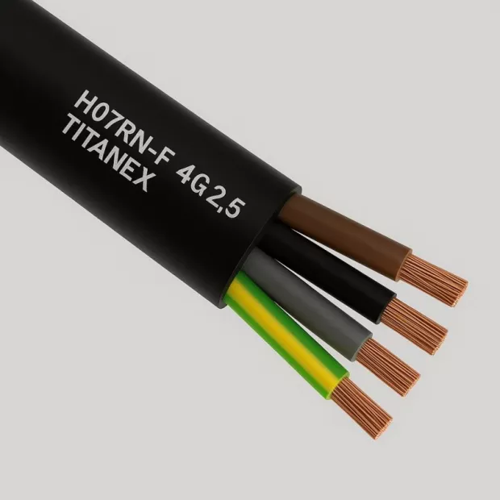
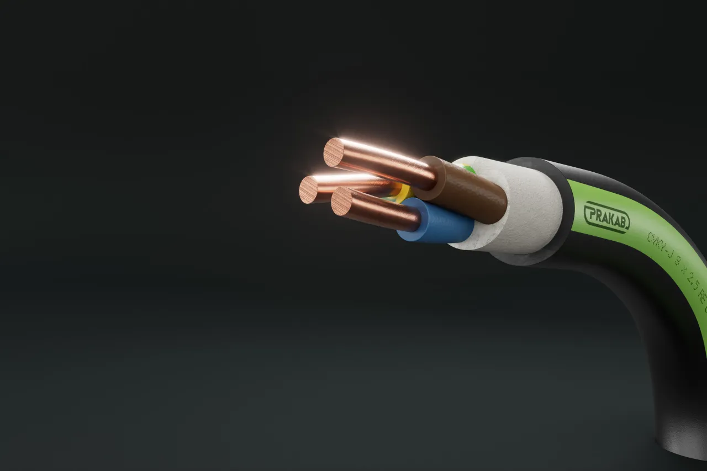
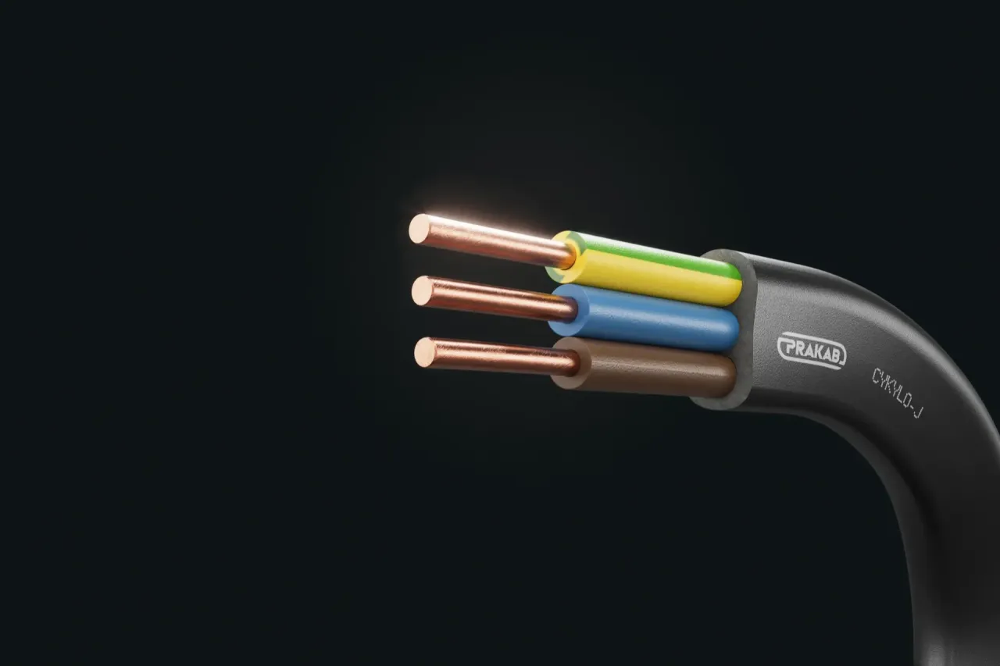
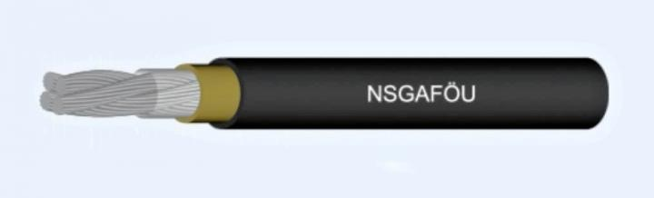
Psaní programu pro Arduino
Program pro Arduino obsahuje dvě základní funkce: setup() a loop().
// Sem patří knihovny, konstanty a proměnné.
void setup() {
// Kód v této funkci se provede pouze jednou po spuštění Arduina.
}
void loop() {
// Hlavní kód programu se stále opakuje dokola.
}Slouží například pro nastavení pinů, spuštění sériové komunikace nebo inicializaci knihoven.
Obsahuje hlavní část programu, která se neustále opakuje, dokud je Arduino zapnuté.
Blikání LEDkou na desce Arduina
Přímo na desce Arduina je jedna LED, kterou můžeme z programu ovládat. Je připojena na pin 13. Co budeme potřebovat?
Touto funkcí nastavíme pin 13, kde je připojena LEDka, jako výstup.
pinMode(13, OUTPUT);Touto funkcí přivedeme na pin 13 logickou jedničku (HIGH). Tím se na pin připojí 5 V a LEDka se rozsvítí.
digitalWrite(13, HIGH); // zapnutí LEDProtože mikroprocesor v Arduinu pracuje s frekvencí 16 MHz, tak pokud bychom jen neustále měnili stav na pinu, nebylo by blikání pro lidské oko viditelné. Proto přidáme pauzu, aby oko stihlo vnímat, že LEDka svítí.
delay(1000); // čekání po dobu jedné sekundyCelý program blikání LEDkou
// sem přijde vložení knihoven, inicializace proměnných...
int led = 13;
void setup() {
// zde vložte kód, který má běžet pouze jednou
pinMode(led, OUTPUT);
}
void loop() {
// zde vložte hlavní kód, který se bude opakovat donekonečna
digitalWrite(led, HIGH); // zapnutí LED
delay(1000); // čekání po dobu jedné sekundy
digitalWrite(led, LOW); // vypnutí LED
delay(1000); // čekání po dobu jedné sekundy
}LED dioda – základní informace
LED je zkratka pro Light Emitting Diode, tedy diodu emitující světlo. Jde o polovodičovou součástku, která při průchodu elektrického proudu přeměňuje elektrickou energii na světlo.
Princip fungování
LED dioda obsahuje PN přechod. Pokud jí prochází proud v propustném směru, elektrony přecházejí z vrstvy typu N do vrstvy typu P. Při jejich rekombinaci s dírami se uvolňuje energie ve formě fotonů, tedy světla.
Barva vyzařovaného světla závisí na použitém polovodičovém materiálu. Intenzita svitu se mění podle velikosti proudu, který diodou prochází.
Delší vývod LED. Připojuje se přes rezistor ke kladnému napětí nebo k digitálnímu pinu Arduina.
Kratší vývod LED. Připojuje se k zápornému pólu zdroje nebo na GND. U běžné LED bývá označena také zploštělou stranou pouzdra.

Přidání další LED a nepájivé pole
Na desce Arduina je jen jedna LEDka, kterou můžeme ovládat (pokud nepočítáme LEDky na pinech Tx a Rx, které ale využíváme k programování Arduina). Zkusíme si teď připojit další LEDku s pomocí nepájivého pole. Nesmíme zapomenout na sériový odpor. Jak spočítat jeho velikost?

Nepájivé pole je univerzální montážní deska určená k sestavování a testování elektronických obvodů bez nutnosti pájení. Je tvořeno plastovým tělem s hustou sítí otvorů, pod nimiž jsou vodivě propojené řady a sloupce. Ty umožňují jednoduché elektrické spojení mezi vloženými vodiči a součástkami.

Struktura pole je obvykle rozdělena na dvě hlavní části:
- Střední pracovní oblast – slouží k osazování integrovaných obvodů a dalších pasivních nebo aktivních prvků.
- Boční napájecí lišty – jsou označené jako „+“ a „−“ a slouží k přivedení napájecího napětí.
Při zapojování externí LED je nutné použít sériový rezistor. Ten omezuje proud, který LED prochází, a chrání ji před poškozením.

Úkol 1
- Zapojte do nepájivého pole LEDku s rezistorem. Připojte anodu LEDky na některý digitální pin Arduina (vyberte jeden z pinů 2-12). Napište program tak, aby se vždy po 1s střídavě rozsvěcovala LEDka na Arduino desce (na pinu 13) a LEDka na nepájivém poli.
- V posledním kroku se budou střídávě rozsvěcovat všechny 3 LED diody.

Sériová linka
Sériová linka umožňuje posílat data mezi Arduinem a počítačem. V Arduino IDE se přijaté zprávy zobrazují v nástroji Sériový monitor.
Serial.print("text");– vypíše text do sériového monitoru.Serial.print(promenna);– vypíše hodnotu proměnné.Serial.println();– vypíše text nebo hodnotu a přejde na nový řádek.
Příklad programu
int cislo = 5;
void setup() {
Serial.begin(9600);
}
void loop() {
Serial.print("Hodnota promenne cislo je: ");
Serial.println(cislo);
}Úkoly k sériové lince
- Do programu s blikáním LED přidejte výpis stavů „svítí“ a „nesvítí“ pomocí Serial.println().
- Napište program, který stále zvyšuje hodnotu proměnné a odesílá ji do sériového monitoru. Upravte datový typ nebo přírůstek tak, aby došlo k přetečení.
- Pomocí cyklu vypište do sériového monitoru čísla od 0 do 15 včetně.
- Pomocí cyklu vypište do sériového monitoru čísla od 10 do −5.
- Pomocí cyklu vypište sudá čísla od 2 do 20 včetně.
- Vytvořte program: po spuštění 2 s čeká, potom 1 s svítí LED, následně 25× blikne LED v intervalu 200 ms zapnuto a 200 ms vypnuto. Potom LED zhasne a zůstane zhasnutá.